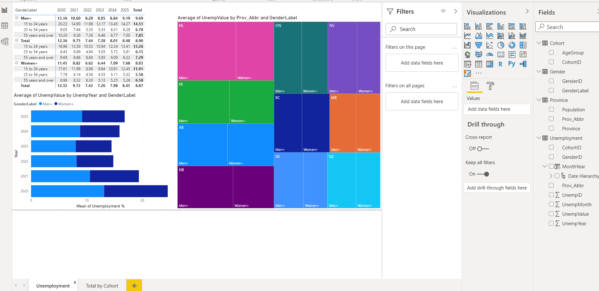
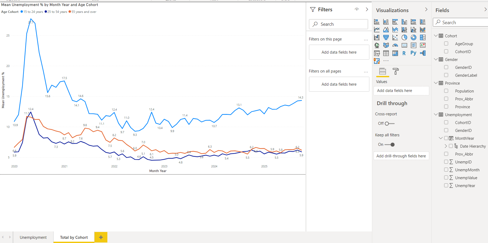

Project Overview
This project involved designing and implementing a full data analytics workflow using real Canadian unemployment datasets. The goal was to import raw data, transform it into a structured relational format, and create interactive Power BI reports that make unemployment trends easier to analyze across provinces, age groups, genders, and time periods.
Problem
Public datasets often contain useful information, but they are not always organized for fast reporting or easy analysis. This project focused on solving that problem by building an ETL pipeline and a reporting model that turns raw unemployment data into clear, decision-friendly visuals.
Tools & Technologies
My Role & Contributions
- Designed the relational structure for province, gender, cohort, and unemployment data.
- Built ETL workflows to import and transform unemployment datasets.
- Prepared and organized data for reporting and dashboard development.
- Created Power BI reports to analyze unemployment by year, cohort, province, and gender.
- Developed technical documentation and supporting diagrams.
- Presented findings through a professional dashboard layout.
Implementation
The solution began with modeling the data into a structured database design. Province, cohort, and gender were separated into related tables, with unemployment values stored in a fact-style table linked by keys. After the data structure was prepared, the dataset was loaded and transformed for reporting. Power BI was then used to create visual pages that show unemployment patterns over time, compare age groups, and highlight differences across provinces and genders.
Results
- Made public unemployment data easier to explore and understand through interactive reporting.
- Showed clear differences in unemployment trends by age group, gender, province, and year.
- Demonstrated end-to-end skills in ETL, database design, business intelligence, and documentation.
Project Screenshots
These screenshots show the database structure and two Power BI report pages used in the final solution.
Entity Relationship Diagram
.png)
Power BI Report – Page 1

Power BI Report – Page 2
